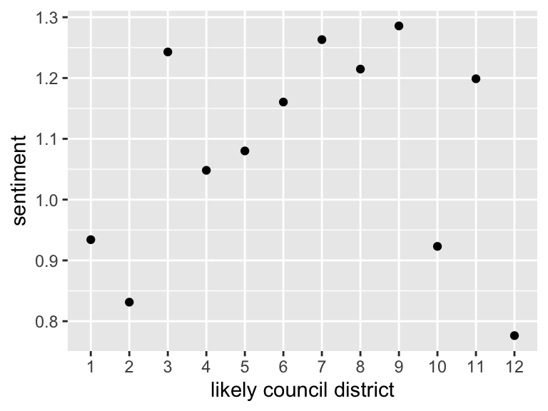

Project introduction
This project analyzes and maps urban-rural balance sentiment in Lexington/Fayette County, Kentucky using data from CivicLex’s On The Table (OTT) survey data, which was conducted in the spring of 2022.
Survey participants completed both open response and multiple choice questions covering a variety of topics relevant to Lexington. The urban-rural balance topic is significant to Lexington as the city continues to evaluate making changes to its Urban Service Area and is economically and culturally intertwined with the thoroughbred horse industry, but is growing in population and other industry within the city’s urban core as well.
Importantly, participation in OTT was entirely voluntary, so the data and the following results shouldn’t be assumed to be representative of Lexington/Fayette County residents at large. CivicLex determined the city council districts that respondents are likely to reside in based on their self-identified neighborhood of residence; thus the following analysis shows “likely council district” instead of “council district”.
Prepping for analysis
Installing packages
Code
install.packages("tidyverse")
install.packages("tidytext")
install.packages("janitor")
install.packages("fs")
install.packages("here")
install.packages("sf")
install.packages("tmap")
install.packages("RColorBrewer")
install.packages("quanteda")
install.packages("quanteda.textplots")
install.packages("quanteda.textstats")
install.packages("textdata")Loading packages
Code
library(tidyverse)
library(janitor)
library(fs)
library(here)
library(tidytext)
library(sf)
library(tmap)
library(RColorBrewer)
library(quanteda)
library(quanteda.textplots)
library(quanteda.textstats)
library(textdata)OTT data
Downloading CivicLex On The Table (OTT) data
Code
dir_create(here("data", "zipfiles"))
download.file(
"https://www.ottlex.org/s/OTT-2022-Raw-Data.zip",
destfile = here("data", "zipfiles", "ott.zip")
)Code
dir_create(here("data", "ott"))
unzip(
zipfile = here("data", "zipfiles", "ott.zip"),
junkpaths = T,
exdir = here("data", "ott")
)Tidying OTT data
Code
ott_data <- read_csv(here("data", "ott", "OTT Raw Data-Raw Data Grid.csv")) |>
clean_names()Selecting the required data
Code
ott_data |>
select(
ott_raw_data_response,
likely_council_district,
ur_balance_or
)|>
pivot_longer(
ur_balance_or,
values_to = "response"
) |>
mutate(
response = str_squish(response)
) |>
filter(
str_length(response) > 0
) |>
mutate(
docid = str_c(ott_raw_data_response, sep = "_")
) -> ur_balance_tidySentiment analysis of Lexington’s urban-rural balance
Combining urban-rural balance open responses by likely council district
Code
ur_balance_tidy |>
filter(
str_length(likely_council_district) < 3
) |>
group_by(likely_council_district) |>
summarise(text = str_flatten(response, collapse = " ")) -> district_responseMeasuring urban-rural balance sentiment by likely council district
Tokenizing responses
Code
district_response |>
unnest_tokens(
word,
text,
token = "words"
) -> district_response_tokensJoining tokens with AFFIN lexicon
AFFIN is a dataset containing a lexicon of English words rated -5 to +5 based on their sentiment, with -5 being the most negative, 0 being neutral, and +5 being the most positive.
Code
district_response_tokens |>
mutate(
word_location = row_number()
) |>
inner_join(
get_sentiments("afinn")
) -> ur_sentimentsGrouping and averaging sentiment by likely council district
Code
ur_sentiments |>
group_by(likely_council_district) |>
summarise(
sentiment = mean(value)
) -> ur_district_sentimentPlot of urban-rural balance sentiment by likely council district
Code
ur_district_sentiment |>
ggplot(aes(likely_council_district, sentiment)) +
geom_point()
Mapping sentiment by likely council district
Adding council district spatial data
Downloading council district GeoJSON from Lexington’s Data Hub
Code
lex_councils <- read_sf("https://services1.arcgis.com/Mg7DLdfYcSWIaDnu/arcgis/rest/services/Council_District/FeatureServer/0/query?outFields=*&where=1%3D1&f=geojson")Joining council district spatial df with sentiment analysis df
Code
ur_district_sentiment |>
mutate(
DISTRICT = as.numeric(likely_council_district)
) -> ur_district_sentiment_dblCode
district_sentiment <-
merge(ur_district_sentiment_dbl,lex_councils)Making merged df a spatial df
Code
district_sentiment_sf = st_as_sf(district_sentiment)Map of urban-rural balance sentiment
Code
tm_shape(district_sentiment_sf) +
tm_polygons(col = "sentiment", palette = "Blues") +
tm_credits("Data sources: CivicLex; LFUCG", size = 0.9, position = c("left","top")) +
tm_credits("Author: Conley Kinkead", size = 0.9, position = c("left","top")) +
tm_scale_bar(position = c("right", "bottom")) +
tm_layout(main.title = "Urban-rural balance sentiment by likely council district",
fontface = "italic",
fontfamily = "serif",
main.title.size = 1.5) +
tm_legend(
legend.title.size = 1.2,
legend.title.fontface = "bold",
legend.text.size = 0.9,
legend.bg.color = "white",
legend.position = c("left", "bottom"))Results
This map shows that residents of all council districts have a positive sentiment regarding Lexington’s urban-rural balance, but at varying degrees. AFINN ratings range from -5 (very negative) to +5 (very positive), with 0 indicating a neutral sentiment. A lower sentiment score on this map indicates a less positive sentiment, and a higher score indicates a more positive sentiment.
The results showing that the OTT participants who are likely residents of council district 12 have the least positive sentiment regarding Lexington’s urban-rural balance is interesting. District 12 covers the primarily agricultural area of Lexington/Fayette County, wrapping around the city’s central area, and largely overlapping with the Rural Service Area.
A little more analysis: Urban-rural balance response content analysis using quanteda
Code
ur_balance_tidy |>
corpus(
docid_field = "docid",
text_field = "response"
) -> ur_balance_corpusCorpus to tokens
Code
ur_balance_corpus |>
tokens(remove_punct = T) |>
tokens_tolower() |>
tokens_remove(pattern = stopwords()) |>
tokens_compound(pattern = list(c("man", "o", "war"), c("horse", "capital"))) -> ur_balance_tokensTokens to DFM
Code
ur_balance_tokens |>
dfm() -> ur_balance_dfmKeyness plot of likely council district 12 urban-rural balance response content versus all others
Code
ur_balance_dfm |>
dfm_group(groups = ur_balance_dfm$likely_council_district) |>
textstat_keyness(target = "12") |>
textplot_keyness()Results
This keyness plot shows words or phrases that respondents who are likely residents of council district 12 used more often in comparison to respondents who are likely residents of all other council districts combined. The words and phrases plotted in blue are the key differentiating terms for likely council district 12 urban-rural balance open responses, while the words plotted in grey represent the key differential words for the same responses for likely residents of all other council districts combined.